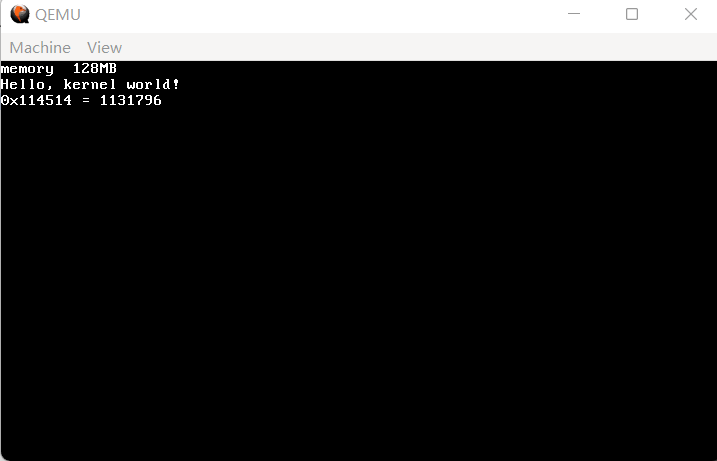

11 段式内存管理的实现
虽然说时钟中断往后的最合理的主题就是多任务，但从目录可以看出来，多任务是下一节的内容，本节我们首先实现一个极其简单的内存管理系统。
什么是内存管理？内存管理，就是管理内存（什么废话文学）。直接解释其含义有点困难，不过，内存的分配和释放，就是内存管理的主要部分。
本节内容大部分参考自《30天自制操作系统》，有原书的建议结合原书交叉参考，毕竟我这个写出来的东西和人家原书肯定是比不了的。
好了，我们开始吧。首先，既然要管理内存，必然要知道内存总共有多大。在 BIOS 中，有非常多的方法来做到（均基于 int 15h，根据 ax 的值为 0xe820、0xe801 和 0x66 分别有不同的行为），但是现在已经到了保护模式，没法用 BIOS 了，怎么办？
换个思路想：32位下内存最多为4GB，如果往没有内存的地方写入一些字节，再读出来的时候，不管长什么样，肯定不会是写入时候的样子。所以，我们只需要指定一个开头和结尾，对这一段区域的所有内存进行试写，如果遇到了边界，那么直接退出，并报告边界值即可。
看上去很美好，但intel的设计更为前卫，为了增加访问内存的效率，486之后的intel cpu加入了缓存功能。在缓存中读写自然是没有意义的，因此首先要检测是否在486以上，如果是，那么就要把缓存关掉。
因此，我们新建 memory.c，简单写一下内存检测的部分。
代码 11-1 内存检测（kernel/memory.c）
#include "common.h"
#include "memory.h"
#define EFLAGS_AC_BIT 0x00040000
#define CR0_CACHE_DISABLE 0x60000000
extern uint32_t load_eflags();
extern uint32_t load_cr0();
extern void store_eflags(uint32_t);
extern void store_cr0(uint32_t);
static uint32_t memtest_sub(uint32_t start, uint32_t end)
{
uint32_t i, *p, old, pat0 = 0xaa55aa55, pat1 = 0x55aa55aa;
for (i = start; i <= end; i += 0x1000) {
p = (uint32_t *) (i + 0xffc); // 每4KB检查最后4个字节
old = *p; // 记住修改前的值
*p = pat0; // 试写
*p ^= 0xffffffff; // 翻转
if (*p != pat1) { // ~pat0 = pat1，翻转之后如果不是pat1则写入失败
*p = old; // 写回去
break;
}
*p ^= 0xffffffff; // 再翻转
if (*p != pat0) { // 两次翻转应该转回去，如果不是pat0则写入失败
*p = old; // 写回去
break;
}
*p = old; // 试写完毕，此4KB可用，恢复为修改前的值
}
return i; // 返回内存容量
}
static uint32_t memtest(uint32_t start, uint32_t end)
{
char flg486 = 0;
uint32_t eflags, cr0, i;
eflags = load_eflags();
eflags |= EFLAGS_AC_BIT; // AC-bit = 1
store_eflags(eflags);
eflags = load_eflags();
if ((eflags & EFLAGS_AC_BIT) != 0) flg486 = 1;
// 486的CPU会把AC位当回事，但386的则会把AC位始终置0
// 这样就可以判断CPU是否在486以上
// 恢复回去
eflags &= ~EFLAGS_AC_BIT; // AC-bit = 0
store_eflags(eflags);
if (flg486) {
cr0 = load_cr0();
cr0 |= CR0_CACHE_DISABLE; // 禁用缓存
store_cr0(cr0);
}
i = memtest_sub(start, end); // 真正的内存探测函数
if (flg486) {
cr0 = load_cr0();
cr0 &= ~CR0_CACHE_DISABLE; // 允许缓存
store_cr0(cr0);
}
return i;
}
配合注释应该不难理解……吧。为了加快效率，memtest_sub 每次只检测每一个 4KB 的开头。memtest 则是对 memtest_sub 的封装，加上了判断486、关闭缓存等的过程。
在这里用到了对 eflags 和 cr0 进行操作的四个汇编函数，代码如下：
代码 11-2 操作eflags和cr0的汇编（lib/nasmfunc.asm）
[global load_eflags]
load_eflags:
pushfd ; eflags寄存器只能用pushfd/popfd操作，将eflags入栈/将栈中内容弹入eflags
pop eax ; eax = eflags;
ret ; return eax;
[global store_eflags]
store_eflags:
mov eax, [esp + 4] ; 获取参数
push eax
popfd ; eflags = eax;
ret
[global load_cr0]
load_cr0:
mov eax, cr0 ; cr0只能和eax之间mov
ret ; return cr0;
[global store_cr0]
store_cr0:
mov eax, [esp + 4] ; 获取参数
mov cr0, eax ; 赋值cr0
ret
程序写好了，怎么测试呢？看看这样行不行：
代码 11-3 init_memory（kernel/memory.c）
void init_memory()
{
uint32_t memtotal = memtest(0x00400000, 0xbfffffff); // 检测4MB~3GB范围内的内存
monitor_write("memory ");
monitor_write_dec(memtotal / 1024 / 1024);
monitor_write("MB\n"); // 以MB形式打印出来
}
代码 11-4 头文件（include/memory.h）
#ifndef _MEMORY_H_
#define _MEMORY_H_
#include "common.h"
void init_memory();
#endif
代码 11-5 测试用main（kernel/main.c）
#include "monitor.h"
#include "gdtidt.h"
#include "memory.h"
#include "timer.h"
void kernel_main() // kernel.asm会跳转到这里
{
monitor_clear(); // 先清屏
init_gdtidt();
init_timer(50);
init_memory();
monitor_write("Hello, kernel world!\n");
// 验证write_hex和write_dec，由于没有printf，这一步十分烦人
monitor_write_hex(0x114514);
monitor_write(" = ");
monitor_write_dec(0x114514);
monitor_write("\n");
//asm("sti");
// 悬停
while (1);
}
编译，运行，效果如图所示： 
（图 11-1 内存检测成功）
我们的检测程序报告共有128MB内存，这与 QEMU 的默认设置相符。如果读者不放心，可以自行在 qemu 的参数中加入 -m <memsize> 参数指定内存大小，其中 memsize 以MB为单位。
检测完了，下面就该正式进行管理了。我目前看到的所有教程中，大致可将内存管理方案分为三种：位图型，表格型以及混合型。
位图型，是指用位图的方式来管理内存。位图其实就是一个字符数组，每一个数组的每一位分别代表一个管理单元（通常为4KB），若要分配连续多个4KB的内存，则需要操控位图的单独位来实现。这种方法不仅说起来麻烦，写起来也麻烦，因此不考虑了。
表格型就非常好理解了，就是把可用内存信息放在一个一个的表项中，每一个项的内容包括起始地址、内存大小等信息。在这里为了偷懒，就只包括这两项信息了。事实上，以UEFI为基础的64位操作系统内核中，离不开与这种表格的交道（在此不详谈了，更何况64位的基本属于混合型）。
混合型比这两种还要复杂，也不多考虑了。
综上，我们最终选择了表格型的方式进行管理。如果硬要写一段代码的话，大致是这样的：
代码 11-6 表格型内存管理方案示例（无文件）
// 定义
typedef struct FREEINFO {
uint32_t addr, size;
} freeinfo_t;
typedef struct MEMMAN {
int frees;
freeinfo_t free[1000];
} memman_t;
// 初始化
memman_t memman;
memman.frees = 1;
memman.free[0].addr = 0x7c00;
memman.free[0].size = 0x400;
// 分配
memman.free[0].addr += size;
memman.free[0].size -= size;
// 释放
memman.free[0].addr -= size;
memman.free[0].size += size;
可以看出来，不管是初始化、分配、还是释放，时间复杂度都是O(1)级别的。虽然表项一多，释放的代码也会跟着多，但总体而言，和释放内存多少并没有关系。如果用位图型的话，那分配和释放多少内存就要写多少个“1”和“0”，这么一看，表格型的时间复杂度也要低一些。
好了，我们开始吧。首先把上面的表项依样画葫芦抄下来：
代码 11-7 表格型内存管理数据结构的定义（include/memory.h）
#define MEMMAN_FREES 4090
typedef struct FREEINFO {
uint32_t addr, size;
} freeinfo_t;
typedef struct MEMMAN {
int frees;
freeinfo_t free[MEMMAN_FREES];
} memman_t;
紧接着，是初始化、总数据和分配的代码，由于十分简单，合并为同一个部分：
代码 11-8 表格初始化、表格总数据和内存分配（kernel/memory.c）
static void memman_init(memman_t *man)
{
man->frees = 0;
}
static uint32_t memman_total(memman_t *man)
{
uint32_t i, t = 0;
for (i = 0; i < man->frees; i++) t += man->free[i].size; // 剩余内存总和
return t;
}
static uint32_t memman_alloc(memman_t *man, uint32_t size)
{
uint32_t i, a;
for (i = 0; man->frees; i++) {
if (man->free[i].size >= size) { // 找到了足够的内存
a = man->free[i].addr;
man->free[i].addr += size; // addr后移，因为原来的addr被使用了
man->free[i].size -= size; // size也要减掉
if (man->free[i].size == 0) { // 这一条size被分配完了
man->frees--; // 减一条frees
for (; i < man->frees; i++) {
man->free[i] = man->free[i + 1]; // 各free前移
}
}
return a; // 返回
}
}
return 0; // 无可用空间
}
内存分配和总数据统计就不多解释了，分配的操作大部分都已经解释过，也不多说。
接下来是内存释放，这一部分比较复杂。
代码 11-9 内存释放（kernel/memory.c）
static int memman_free(memman_t *man, uint32_t addr, uint32_t size)
{
int i, j;
for (i = 0; i < man->frees; i++) {
// 各free按addr升序排列
if (man->free[i].addr > addr) break; // 找到位置了！
// 现在的这个位置是第一个在addr之后的位置，有man->free[i - 1].addr < addr < man->free[i].addr
}
if (i > 0) {
if (man->free[i - 1].addr + man->free[i - 1].size == addr) {
// 可以和前面的可用部分合并
man->free[i - 1].size += size; // 并入
if (i < man->frees) {
if (addr + size == man->free[i].addr) {
// 可以与后面的可用部分合并
man->free[i - 1].size += man->free[i].size;
// man->free[i]删除不用
man->frees--; // frees减1
for (; i < man->frees; i++) {
man->free[i] = man->free[i + 1]; // 前移
}
}
}
return 0; // free完毕
}
}
// 不能与前面的合并
if (i < man->frees) {
if (addr + size == man->free[i].addr) {
// 可以与后面的可用部分合并
man->free[i].addr = addr;
man->free[i].size += size;
return 0; // 成功合并
}
}
// 两边都合并不了
if (man->frees < MEMMAN_FREES) {
// free[i]之后的后移，腾出空间
for (j = man->frees; j > i; j--) man->free[j] = man->free[j - 1];
man->frees++;
man->free[i].addr = addr;
man->free[i].size = size; // 更新当前地址和大小
return 0; // 成功合并
}
// 无free可用且无法合并
return -1; // 失败
}
释放的部分比上面三个部分加起来还长，解释一下。
首先，稍微分析一下就会发现，在表格中的所有表项，必然以基地址为键呈升序排列（也就是说，越往后的项，基地址也越大）。正因如此，第3~8行的判断才得以顺利进行。
第926行，是当前释放的这一段内存与前后进行合并的判断。第2835行，如果无法与前面的合并，则要进行与后面的内存合并的判断。如果不这样判断，会出现下面的情况：
内存表项0: 起始地址 0x400000，大小 3KB
内存表项1: 起始地址 0x401000，大小 4KB
当释放从 0x400c00 开始的 1KB 时，如果不进行判断，那么如果后续要分配 5KB 内存，便无从下手。然而，这三段内存（表项0、表项1、刚释放）实际上是以 0x400000 为起始、共计 8KB 的连续内存空间，完全可以分配 5KB 内存。
如果都合并不了，只好单独创建一个内存块插入在这之间。如果已经完全没有地方，只好返回-1报错了。
好了，到此为止，我们仅用了不到200行代码，就完成了段式内存管理的实现——吧。在此之前，我们要对段式内存管理进行一个基本的封装。
首先，现在的内存释放需要指定大小，这实在是非常不方便的一个因素。因此，我们需要开辟出一定的内存空间，供内存释放时读取大小使用。
具体而言，封装后的 kmalloc 和 kfree 如下：
代码 11-10 最终封装内存管理（kernel/memory.c）
void *kmalloc(uint32_t size)
{
uint32_t addr;
memman_t *memman = (memman_t *) MEMMAN_ADDR;
addr = memman_alloc(memman, size + 16); // 多分配16字节
memset((void *) addr, 0, size + 16);
char *p = (char *) addr;
if (p) {
*((int *) p) = size;
p += 16;
}
return (void *) p;
}
void kfree(void *p)
{
char *q = (char *) p;
int size = 0;
if (q) {
q -= 16;
size = *((int *) q);
}
memman_t *memman = (memman_t *) MEMMAN_ADDR;
memman_free(memman, (uint32_t) q, size + 16);
p = NULL;
return;
}
代码 11-11 MEMMAN_ADDR 的定义（include/memory.h）
#define MEMMAN_ADDR 0x003c0000
这一部分涉及到相当晦涩的指针操作，简单解释一下。
在 kmalloc 中，首先从一个固定的地址（0x3c0000）读出一个 memman_t 来，然后分配 size 字节的内存。注意这里还多分配了 16 个字节，这是干什么用的呢？
众所周知，free 是不需要知道这段内存的大小的，我们希望 kfree 也是一样。所以，我们便需要在这段内存的一开头把大小存起来。这也就是第 351 行在干的事情：把 p 转化成 int 指针，再向它这个地址处写入大小，最后把指针后移16把大小这一块空过去。
同理，在 kfree 中，先从地址最开头读出大小，然后从同一个 memman_t 处把内存释放。
最后的最后，由于 kmalloc 和 kfree 都指着这块地的 memman_t 呢，我们需要在 init_memory 中初始化 memman。代码如下：
代码 11-12 初始化 memman（kernel/memory.c）
void init_memory()
{
uint32_t memtotal = memtest(0x00400000, 0xbfffffff);
memman_t *memman = (memman_t *) MEMMAN_ADDR;
memman_init(memman);
memman_free(memman, 0x400000, memtotal - 0x400000);
}
同样删去了打印，因为用不到了。
内存管理到此结束，我们还真验证不了它能不能用，不过，很快，我们会转入另一个更具挑战性的课题——多任务。